第三篇 · 运行时内存与对象模型
第 11 章 对象分配、初始化与访问
创建语义、物理分配、构造完成和跨线程发布是四个需要连接、又必须区分的事实。编译器还可能保留全部可观察语义，同时省掉一次物理对象分配。
同一个 new，为何出现不同账单
本章 localSum 与 escapedSum 都创建两个 int 字段的 Pair，随后相加。后者还把对象写入一个静态 volatile 引用。各调用20万次时，本轮近似分配计数分别为0与4,800,000字节；禁用逃逸分析后，两者都为4,800,000。这里没有计时，目标是解释物理分配的不同，而不是报告谁快多少。
基线为 Java 开发工具包（Java Development Kit，JDK）25.0.5.0.2、HotSpot、macOS AArch64、默认对象头与8字节对齐。布局前置见第10章，构造器规则见第5章与第7章。所有观察为固定规模、有界进程；不以源码出现一次 new 就断言某层必定分配一个对象。
11.1 分配快路径与慢路径
11.1.1 类型、大小、空间与构造依次关联
执行创建语义需要已解析的目标类型，并遵守类初始化等前置条件；类型元数据给出实例大小与引用字段布局。实际分配器取得一段满足大小和对齐的空间，建立可被运行时识别的对象表示，然后才由实例初始化方法完成用户字段赋值。类型不能实例化、内存不足和构造器异常是不同阶段的问题，不能把所有失败统称为构造失败。
锁定 MemAllocator::allocate 建立分配上下文，调用 mem_allocate，取得非空空间才 initialize。mem_allocate 先尝试线程缓冲区，必要时补充或进入堆的分配接口；后者由当前收集器承接空间管理及可能的回收。申请失败并不证明长期泄漏，还要回到第9章的上限与持有关系。S01

11.1.2 解释器与编译代码不必经过同一条调用链
解释器可以在模板中完成类型检查与分配快路径，不能每次都画成先进入一个公共 C++ 函数。编译后代码则可能把空间检查、指针推进和必要初始化展开为机器指令；失败分支才调用运行时辅助入口。C2 的 PhaseMacroExpand::expand_allocate_common 负责展开分配节点，内含缓冲区空间与慢调用路径。若节点已经被消除，就没有这次常规分配展开。
快路径失败也不等于立即触发回收。剩余缓冲区太小、当前对象不适合放入缓冲区、需要补充缓冲区、堆分配失败等具有不同处理。将慢路径与回收画等号，会漏掉正常的缓冲区外分配，也难以解释“堆还有空间却发生辅助调用”。编译模式、内联边界和收集器都要随记录注明。S02
11.2 线程本地分配缓冲区
11.2.1 线程独占分配游标，不独占对象语义
线程本地分配缓冲区（Thread-Local Allocation Buffer，TLAB）是从堆取得的一段可由当前线程推进游标的分配区。ThreadLocalAllocBuffer::allocate 读取 top，比较 end与top之间剩余空间，足够时把top增加对象大小。每个线程各自推进自己的游标，从而减少每个小对象分配时对共享分配游标的协调；取得新缓冲区仍须与堆分配器协作。
缓冲区属于某个线程的分配过程，里面的对象仍在Java堆，可被安全发布给其他线程。TLAB既不是线程栈，也不是安全发布机制。对象从哪里分配，与之后由谁持有、是否逃逸，是两个维度。escapedSum把刚分配的Pair发布后，并不需要把它从“私有内存”复制到另一块共享堆。

11.2.2 剩余空间决定保留还是补充
慢路径先处理采样可能缩短的end边界，再检查剩余空间与refill_waste_limit。剩余较大时，可能保留旧TLAB，让当前对象走缓冲区外分配，以免丢掉过多空间；剩余较小时，记录浪费、退休旧区并计算新大小。申请新缓冲区可能获得最小和期望之间的大小，也可能失败后转向共享堆接口。缓冲区退休时还需使残余空间符合堆可遍历要求。
本轮gc+tlab日志确有fill、refills、slow allocs与waste；飞行记录器（JDK Flight Recorder，JFR）也记录了分配新TLAB时的Pair，以及一个准备阶段的缓冲区外Pair。事件中的tlabSize是整块缓冲区大小，allocationSize是触发事件的对象大小，不是每个对象都独占一块同样大的缓冲区。不同事件覆盖方式不同，不能把某个“新TLAB事件”计数当作对象总数。S07
11.3 对象初始化与安全发布
11.3.1 默认值、头部与构造器完成不同职责
对象字段首先具有语言规定的默认值，实例字段初始化和构造器再建立用户期望状态。实现可以在获取整段缓冲区时清零，也可以逐对象完成必要清零，甚至在证明语义等价时消掉冗余写入。本基线ObjAllocator::initialize调用mem_clear与finish；mem_clear清理对象数据并处理类字间隙，finish设置状态及类型信息。
finish使用release写入，使清零、数组长度与头部状态在“对象可被并发收集器解析”的边界前建立。紧凑头写prototype_header，传统布局设置mark再发布klass。这个内部协议不等于Java代码已经执行完构造器。随后调用的<init>还可能写字段、调用父类构造器或抛异常。第5、7章核对的灵活构造器前导语句规则也没有删除默认初始化和安全发布要求。S03
11.3.2 有引用、构造完成与其他线程可见分别判断
运行时为收集器识别对象，不会自动使其他Java线程以正确同步关系读到业务字段。Pair构造完再写publishedPair，volatile写与随后读到相应发布的volatile读建立先行发生关系；第25章将完整展开Java内存模型（Java Memory Model，JMM）的动作推理。本章没有通过并发跑几次来替代规范依据。
final字段具有专门的初始化安全语义，但它不把对象变成深度不可变，也不修复构造期间错误泄露this的设计。构造器正常返回说明当前创建过程完成；对象被其他线程取得，还需分析发布方式与可见关系。单次运行里打印出了期望值，不足以证明缺少同步的程序正确。S03
11.4 字段、数组与字符串访问
11.4.1 字段偏移和数组步长建立地址联系
对象引用经当前编码解码后，字段访问依据已解析字段的偏移定位，继承字段的实际偏移由布局决定。数组元素的概念地址为对象起始加base与index×scale，还要满足空引用和边界等语义要求；检查可能由编译器合并或在已证明安全的范围内消除，但不能改变允许的行为。引用字段／元素的读写还可能带收集器屏障，并非任何配置下都只有一次普通机器加载或存储。
第10章实际记录了int[]与long[]在紧凑头下不同的base。拿这些偏移理解访问时仍须保留类型、配置与移动可能性，不能把某次读出的地址当作长期不变的对象身份。Java源码中的getfield、putfield或数组指令也不是完整机器码时序。
11.4.2 内容共享、驻留与去重是三种关系
锁定String使用byte[] value和byte coder；紧凑字符串允许适合的内容采用Latin-1，其他内容采用Unicode转换格式16位（Unicode Transformation Format 16，UTF-16）表示。对外的char索引语义不随内部编码改变。本轮只读反射看到“memo”的coder为0，“内存”为1；这是当前实现和配置，不是允许应用长期依赖的字段接口。
String(String original)直接复用原value与coder，所以复制构造可以得到不同String对象却共用内容数组。由相同字符数组分别构造则会复制内容，本轮开始时两个包装对象及内容都不同。intern返回规范化的String引用，不会把已有变量自动改写：first.intern()==separate.intern()为true，first与separate仍是两个对象。S04
垃圾收集（Garbage Collection，GC）字符串去重处理的是可共享的内容数组。锁定StringDedup::Table找到相同内容后，经允许性检查及锁保护替换String的value引用，保留包装对象身份。本轮保留4000个独立构造的128字符字符串：关闭去重时，两次有界回收请求后的内容数组身份数仍4000；启用去重、年龄阈值1时，第一次请求后的观察已变为1，第二次仍1。独立事件日志还记录了并发去重工作。S05
日志总计4074次初轮去重包含其他字符串，不能全归给这4000个样本。请求回收也不保证指定时刻去重完成；本轮各等0.5秒后观察只是实际结果。去重不会让字符串的==变成值相等，也不会自动消除缓存中的包装对象。读取内部value需要本次命令显式开放java.lang，仅用于只读教学观察。
11.5 分配消除与对象物化
11.5.1 不逃逸只是条件，标量可替换才有转换
// CH11-E01 的两个真实入口，省略方法外阶段统计
private static int localSum(int input) {
Pair pair = new Pair(input, input + 1);
return pair.left + pair.right;
}
private static int escapedSum(int input) {
Pair pair = new Pair(input, input + 1);
publishedPair = pair;
return pair.left + pair.right;
}逃逸分析判断对象可能被哪些范围观察，标量替换把可分别跟踪的字段值接入优化后的计算。锁定PhaseMacroExpand::eliminate_allocate_node先检查EliminateAllocations、非逃逸及可标量替换条件，再检查使用与安全点信息是否可处理，完成scalar_replacement后才记录eliminate_allocation。不能从“局部变量”直接跳到“必然无分配”。调用边界、字段使用、优化限制及编译形态都会影响结果。

本轮明确使用C2、同步编译并禁止把两个入口内联到调用方。localSum的编译任务563指向Pair类型1389，在字节码索引（Bytecode Index，BCI）0记录eliminate_allocation；对应随后局部阶段近似分配增量为0。escapedSum有C2代码且保留阶段为4,800,000字节，与20万×24字节一致。静态引用只保留最后一个Pair；这个数是累计分配量，不是当前存活量。禁用逃逸分析配置下，局部阶段也为4,800,000字节。
JFR在准备阶段实际采到过localSum的Pair，此时尚未形成相同优化结果；不能据源码方法名忽略执行阶段。后续没有采到某类分配，单独也不能证明零分配。本章把具体编译转换、阶段计数和事件放在一起，只得出本次编译与输入下消除成立，不外推所有调用、其他参数或未来版本。
11.5.2 去优化可能重新需要一个真实对象
标量替换后，逻辑上仍需保持对象、字段与身份相关语义。优化代码在安全点保留恢复所需描述；去优化需要还原可观察状态时，Deoptimization::realloc_objects按类型建立对象，reassign_fields把恢复值写回，并处理多个描述之间的引用与别名关系。恢复不是重新执行用户构造器，否则可能重复业务副作用。
所以“源程序有对象但当前无对应堆分配”与“必要时物化”可以同时成立。它不意味着把一个完整普通对象永久搬到线程栈，也不证明所有不逃逸对象都栈上分配。本章只研究恢复实现，没有制造去优化事件；详细状态重建和失败处理由第18章承接。S06
观察记录怎样支撑结论
两源的阅读页与正式源一致。运行说明包含有限输入、编译选项、记录配置和退出方式。本轮记录保存四进程实际退出0、工具配置、精选日志与完整材料索引；大型编译记录与原始飞行文件在项目artifacts中保留摘要。
线程分配接口契约将读数定义为近似量；JFR的采样权重不是该对象的浅大小，新TLAB事件也不是全量分配追踪。开启记录的主组与禁用逃逸分析的组还有观测配置差异，本章不作性能对比。调试记录中的compile_id、类型编号只在该份日志内有效，不能写成下一次运行必须出现的编号。S07
没有编写测试、断言、压力或基准代码。有限结果不能证明并发正确性或“绝不分配”；去重时点与物化也没有被包装成统一的运行保证。
回顾与思考
分配是空间取得与表示建立，构造是业务状态初始化，发布是跨观察者的同步关系，回收则取决于持有和收集协作。优化可以改变物理表示，却必须维持这些操作的可观察语义。
- 为什么TLAB外分配不一定引发GC？为什么TLAB对象可以被另一线程使用？
- 运行时设置klass的release写入，与把引用写入volatile字段，分别服务谁的可见协议？
- 为什么同一方法在准备阶段能出现分配事件，稍后又能观察到分配消除？
- 字符串去重后，还能用==比较任意字符串内容吗？为什么驻留又是不同的操作？
第12章将沿离开Java堆的资源继续追问：谁拥有空间，谁只持有一个视图，以及何时真正释放。
来源与材料
- S01：锁定MemAllocator、ThreadLocalAllocBuffer的空间、补充、清零与finish分支，精确路径见来源索引。
- S02：锁定C2 macro.cpp的eliminate_allocate_node、scalar_replacement、expand_allocate_common；本轮编译任务与分配记录。
- S03：语言规范25 §12.5、§17.4.5及§17.5，配合MemAllocator内部可解析边界。
- S04：String接口契约与锁定String.java的value、coder、构造器和intern。
- S05：锁定StringDedup::Table::deduplicate、deduplicate_if_permitted；本轮内容数组身份和去重日志。
- S06：锁定Deoptimization::realloc_objects、reassign_fields；仅源码研究。
- S07：线程分配管理接口，本轮JFR配置与事件、gc+tlab日志。